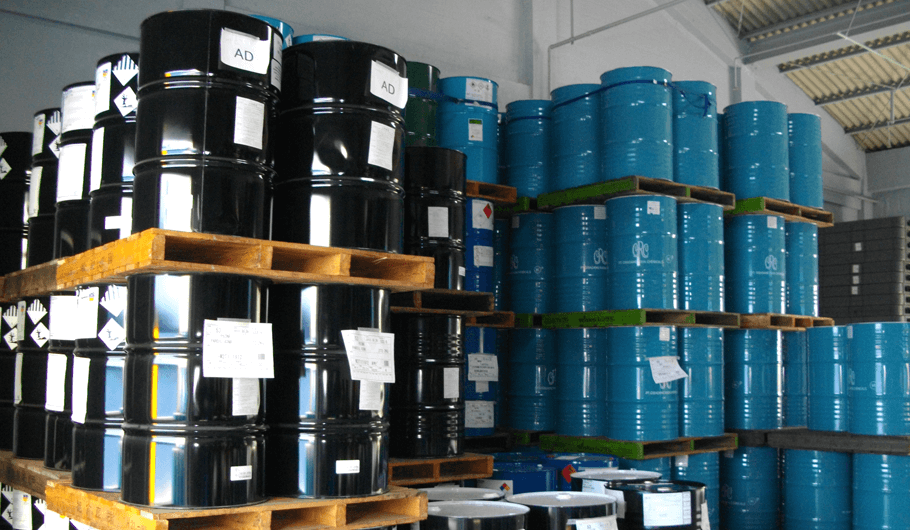
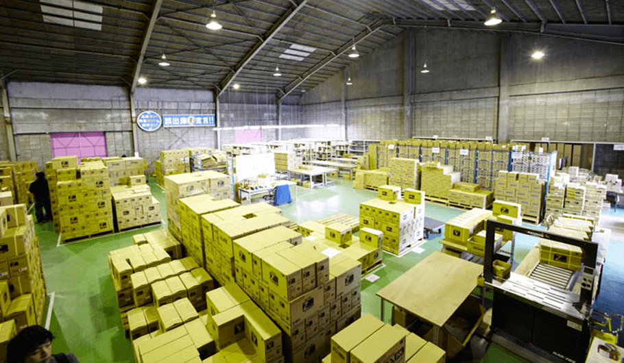
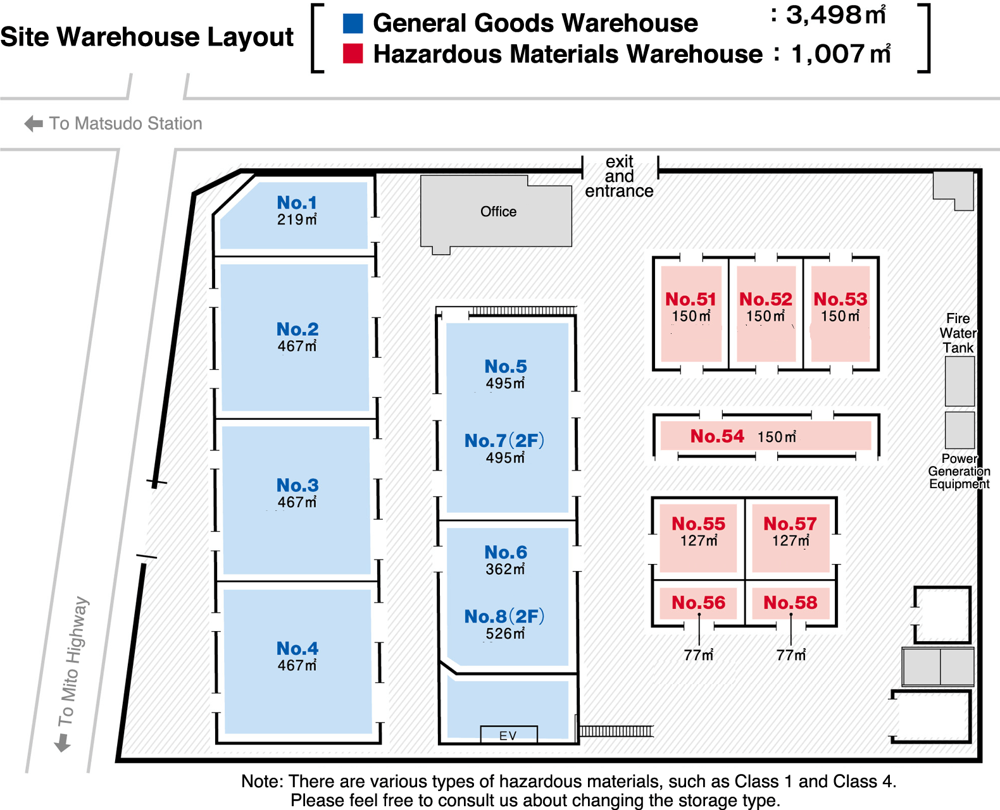

Matsudo Sales Office
Hazardous materials storage / Storage and cargo handling / Web inquiries available
This is a hybrid warehouse that can store both 'general goods' and 'hazardous materials' together, a rare offering in the surrounding Tokyo metropolitan area.



Warehouse overview
Site area
8,273m²
General goods warehouse area
3,498m²
Hazardous materials warehouse area
1,007m²

Features of the Matsudo Sales Office
-
01Ceiling height of over 6 meters, with a maximum floor load of approximately 3 tons per square meter.The Matsudo Sales Office, located on a site of approximately 8,265 square meters at the southwest corner of the Kitamatsudo Industrial Park, prioritizes ease of use and efficiently arranges both general goods warehouses and hazardous materials warehouses.
We guarantee high storage efficiency with our single-story warehouse featuring high ceilings and high floor load capacity.
-
02Directly connected to the Tokyo metropolitan area! Rapid logistics in a prime locationA well-located logistics base with excellent transport links, ideal for nationwide transport and delivery.
The extension of the Outer Ring Expressway is likely to lead to further growth, establishing this as a location with excellent prospects for expansion and development. -
03ISO 9001 Certification AcquisitionWith the acquisition of ISO 9001 certification, we are actively focused on improving the warehouse environment and developing high-quality logistics management.

-
04WEB Inquiry SystemWith our inventory management web system, you can check inventory status in real-time on your PC (compatible with smartphones).

Access
ACCESS
Matsudo Sales Office
312 Minamihanashima Mukaimachi, Matsudo-shi, Chiba 271-0065
Phone：047-363-4241
FAX：047-363-4243
Take the bus to Nihon University Dental Hospital from JR Joban Line Matsudo Station and get off at Eimachi 1-chome.
10 minutes from the Misato-minami Interchange on the Tokyo Gaikan Expressway.